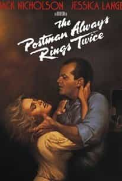
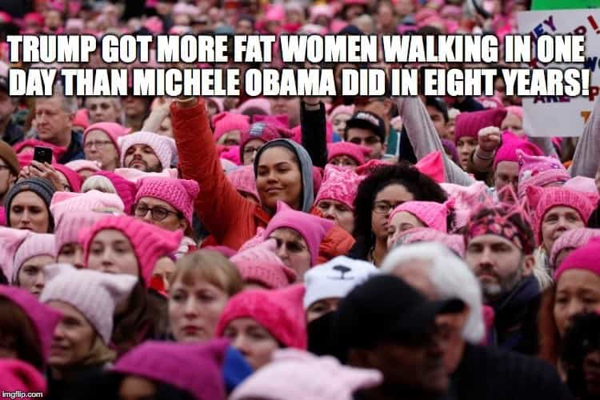

Notices the lies told to this generation and writes about them.


The proper response to political correctness could be to go on living life as you see fit. Another option is to cave in, as many in this era do. “Go along to get along,” may simply appear as a necessary expedient when you are told to “pick your battles.”
That may seem innocuous, but the vile act of giving in to what is wrong is at the very heart of the figurative, accurate, and effective pejorative “cuckservative.” If you are a man, you don’t let your vital boundaries get crossed because when you do, you show the world that nothing is sacred to you. In the smallest of behaviors you show the world that when it comes down to it, even your wife is not sacred to you.
In this era, where free speech is aggressively under attack, the superior response to society attempting to silence others is to draw a line that is far beyond legitimate speech that affects you. There are plenty of opportunities in life where you draw a boundary so far from anywhere that matters.

Your mailman or UPS guy drops off packages at the door. Not inside the door. It’s just an extra two feet, it’s not like he’s sitting down at your dinner table or climbing into bed, so what’s the difference? You set that wide boundary at the threshold of your home, no matter how heavy a package is.
You don’t want this guy in your private space because before you know it, this stranger may easily push the boundary a little farther and a little farther. One way to make sure that the mailman is never in bed with your wife is to make sure the mailman is never in the house. The door is the boundary of the home. The home is private. The government worker and the stranger alike are not invited into the home.
Mike Pence famously doesn’t go unchaperoned for a meal with a woman other than his wife. He doesn’t consume alcohol at events where his wife is not present. Those are fantastically wide boundaries in our era. And wise boundaries that have been going on in Pence’s life since as long as 2002 according to some reports.
These are boundaries set by a man that understood long ago that #MeToo accusations have always been easy to make. One way to make sure you are never wrongly accused of fooling around on your wife is to never be in a situation where it is your word against the other woman’s word.
You don’t need many years worth of savings and investments to live comfortably. As long as you have marketable skills, you could exist fine with very little saved. But it sure feels good to have a giant buffer protecting you from direly being in need of that next paycheck. One way to make sure you never live paycheck to paycheck is to make sure that you are many paychecks away from that horribly low bar.
Free speech should be another boundary where we draw a large buffer.

Because we didn’t successfully protect the rights of the deplorable to draw Muhammad caricatures, we are now fighting over whether any caricature artist will ever again be allowed to caricature any black woman.
How long before all cartoons of anyone on the left becomes forbidden? Before cartoons of any beloved figure adored by many becomes forbidden? Push back. Not only is Serena Williams allowed to be caricatured, so is Muhammad. In fact, the world is better off if artists caricature the two bullies being badly behaved together.
If you don’t fight for that academic freedom, then you end up with a campus environment where even the well-evidenced and relatively tame Charles Murray can’t take a stage in a college. When you stand up for the most out in right field intellectual rigor, you stand up for the concept of intellectual rigor.
It brings greater truth, reason, and honesty. Those all make for a better world. Inviting intellectually rigorous debate makes the world a better place. Yes, that also means inviting intellectually rigorous debate on the Holocaust makes the world a better place.
It’s almost too ridiculous to mention. That’s how far things have gone. Even the relatively tame Gavin McInnes can’t speak freely on a college campus in his own town. Every deplorable with the most horrible pro-free speech views must be protected.
The Overton Window has shifted too far already when Gavin McInnes is among the most triggering on the right, but as he points out, he makes it cool to be on the political right, and feeling cool is something the snowflakes long ago thought they had monopolized.
I don’t want to draw Serena Williams caricatures, write books about the Holocaust, or wait in line at NYU to hear Gavin McInnes speak, but I see the value in those boundaries being drawn far from activities I care about. Therefore, I support the free speech of others by helping to protect the boundaries around others, speak out against the silencing of them, and push the boundaries beyond what is comfortable.
As the German Lutheran minister Martin Niemoller pointed out in his own fight against oppression:
“First they came for the socialists, and I did not speak out— Because I was not a socialist.
Then they came for the trade unionists, and I did not speak out— Because I was not a trade unionist.
Then they came for the Jews, and I did not speak out— Because I was not a Jew.
Then they came for me—and there was no one left to speak for me.”
If you fight for others, if you fight to keep the boundaries far away from you, you will never need to worry about your own rights. That generosity is self-interested, and is very good for society.
Deplatforming is a legitimate behavior on the left. It’s currently being celebrated throughout the left as a victory against extremism.
The term “hate speech” is a legitimate distinction on the left. It’s merely an attempt to silence. To overpower a person with an opinion. There is no hate speech. There is only speech.
These are never legitimate distinctions between how you can interact with what adults. There is no hate speech, there are no hate crimes, there are no protected classes of adults. That must be the perspective. True to first principles: a human is a human.
Everyone who comes to an intellectual debate must be ready to take off the gloves and to get deep into the truth of the matter being discussed. In a debate, no one is free to be protected from the truths that arise in an intellectual debate no matter how offended they feel, not even if they cry or throw a tantrum. Laugh at them if they do, for they should be very embarrassed.

The true hate crime is the promotion of neo-Marxism by social justice warriors. They seek to win debates by pulling apart the freedoms that the freedom fighters of the West, our intellectual forebearers have struggled for centuries to introduce to humanity.
Marxism turns good cultures into legalistic petty cultures that tend to behave culturewide in adulthood as if they’ve gone through an abusive upbringing. Marxism turns relative paradises on this planet into places of abject squalor. These are hate crimes.
Interestingly, the neo-Marxist social justice warriors overlook this fact and prefer to point to your hurtful words as the real hate crime. Don’t let them. They are the domestic terrorists who would repeat the failed Marxist experiment on this wonderful land.
I request of you that as you go through life, you take the temperature of the place you are in and always seek to push the boundaries. To do so is alpha and feels good. Sometimes you fail, more often you succeed.
Just like pushing boundaries with a woman and weathering shit tests earns you rewards, pushing the free speech boundaries and passing the shit tests of those who would silence you will earn you rewards.
Cross the line. Do it fearlessly. Do it boldly.
You know what they are. Use them. All the words that you are told you can’t use. Use them. Use them with skill, for maximum effect. But use them. Don’t let anyone tell you otherwise.
The best researched most effective thing you know how to present, present it. Present it in a way that no one can dispute it. If you’re not great at anything, present what you’re best at. Do it enough and you’ll get good at it.
I’m not saying to be a social pariah who can’t take the temperature of his audience, but I am saying to be the one who can see exactly where the line is and to artfully be comfortable pushing beyond it.
This is the requirement of us in our current aggressive anti-free speech era if we are going to preserve the level of free speech we have come to know.
This is why in your own life you should be offensive, very offensive, starting today, before the Overton Window shifts.
Read Next: Free Speech Isn’t Free — How 90 Men Stood Up Against The Establishment And Won